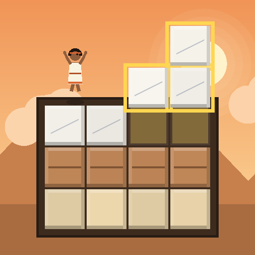

Wall of Ages · Blok Bulmaca / Block Puzzle
Taş taş, çağ çağ bir duvar ör; antik çağların hazinelerini kazıp çıkar.
Build a wall stone by stone, age by age, and dig up treasures of ancient civilizations.
Gizlilik Politikası / Privacy Policy
İletişim / Contact: prowebomer@gmail.com